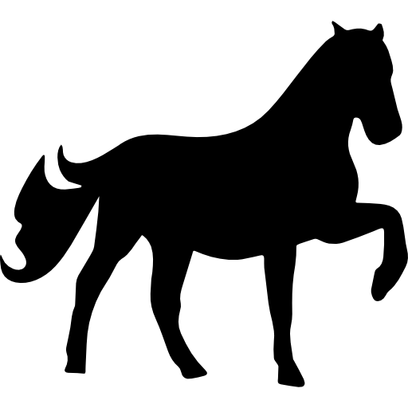

Что удалось узнать о лошадях
 1
1
Во-первых, оказалось, что все современные
домашние лошади произошли от одной группы
одомашненных лошадей, т.е. находятся в близком
родстве друг с другом.

2
Во-вторых, в близком родстве с современными
домашними лошадьми оказались древние домашние
лошади, вымершие примерно 4200 лет назад, а
также дикие лошади из Западной Евразии.
 3
3
В-третьих, просенилось положение лошадей из
поселения вогай", которые до сих пор считались
самыми древними представителями домашних
лошадей в мире.